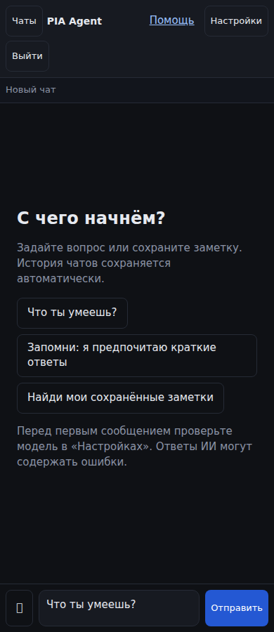

Ваши диалоги и знания — под рукой
Обсуждайте вопросы с ИИ, прикладывайте документы и фотографии, собирайте личную базу знаний. Работайте с одной учётной записью в браузере и мобильном приложении на сервере вашей установки.
Обсудить задачу
Начните чат, получите ответ от настроенной модели и вернитесь к истории позже. Генерацию можно остановить.
Разобрать документ
Прикрепите файл или фотографию к сообщению. Проверьте извлечённые факты перед добавлением в базу знаний.
Управлять своими данными
Защитите вход через 2FA, скачайте данные с исходными файлами или удалите аккаунт из настроек.

Что нужно для работы
Доступный сервер, интернет и настроенная оператором модель. Обращения к модели могут оплачиваться; стоимость и лимиты уточните у оператора до использования. Ответы ИИ проверяйте, прежде чем опираться на них.
Веб-приложение можно добавить на домашний экран. Подписанную Android/iOS-сборку и действующие ссылки установки предоставляет оператор. Напоминания сейчас доставляются через привязанный Telegram.
Перед загрузкой документов прочитайте правила данных и контакты оператора. Для забытого пароля есть восстановление доступа.